長期トレンド
JKMとJEPXシステムプライスの推移グラフ
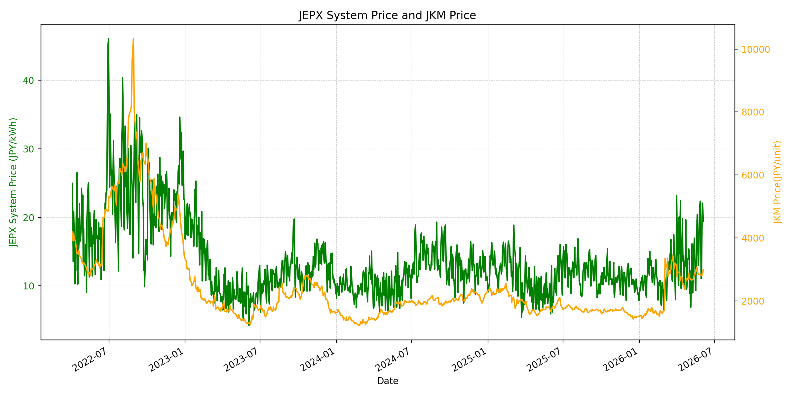
WTIの推移グラフ
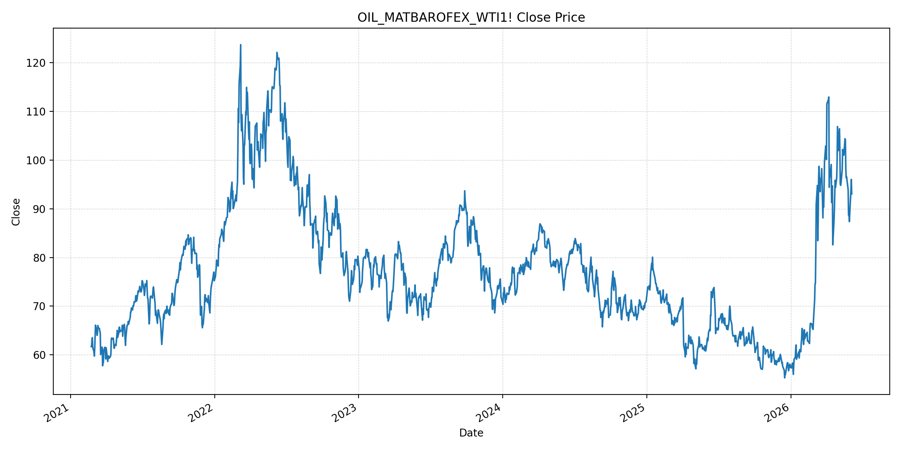
JEPXエリアプライスグラフ（直近一年分）
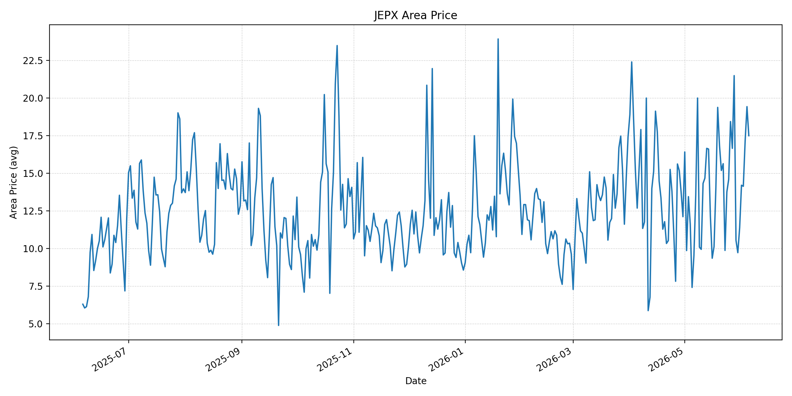
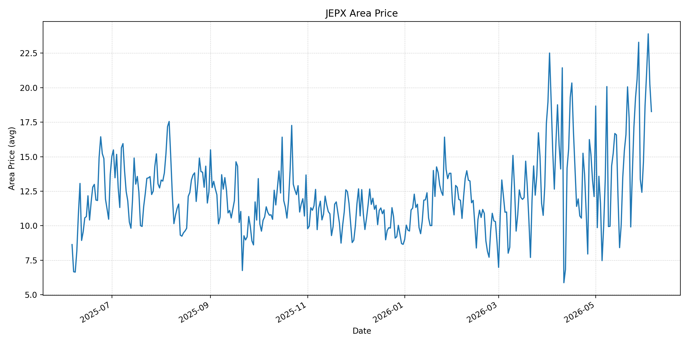
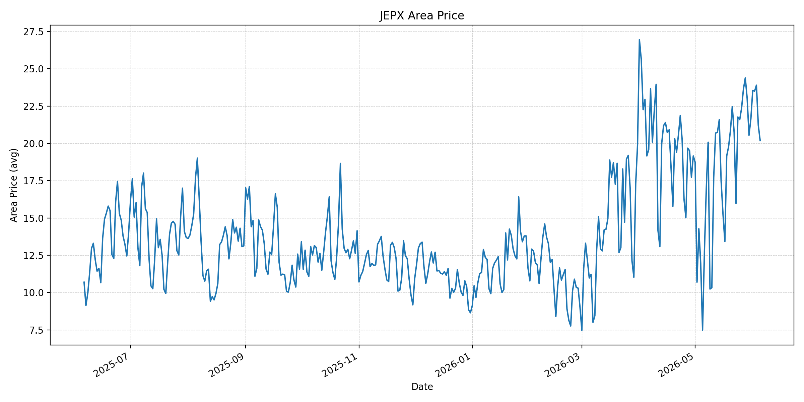
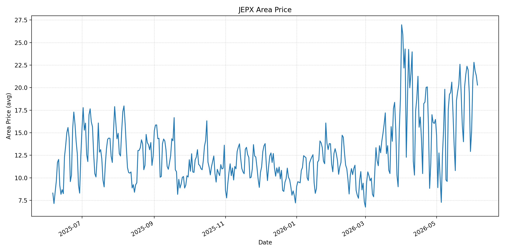
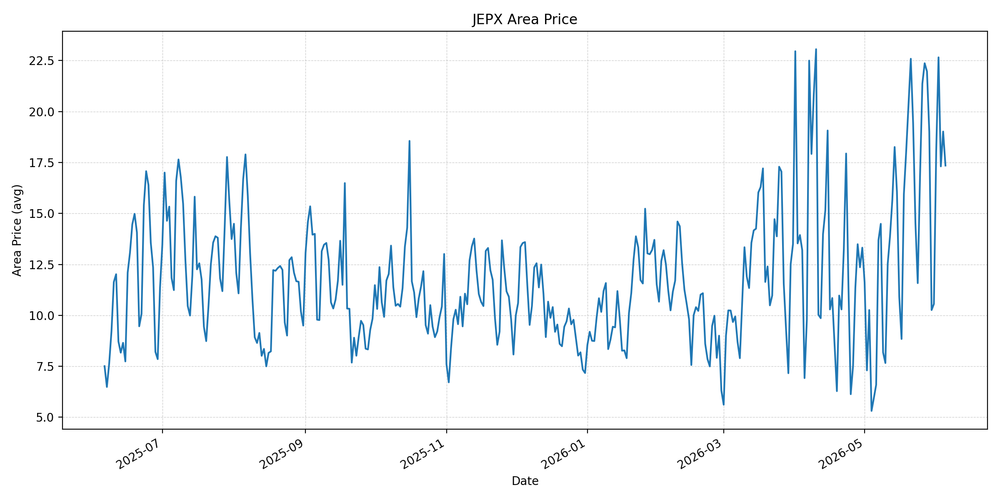
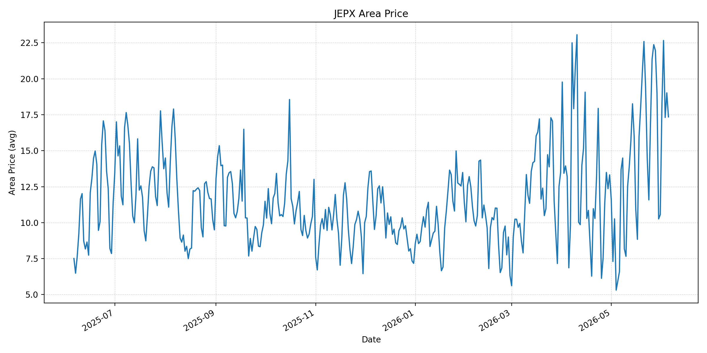
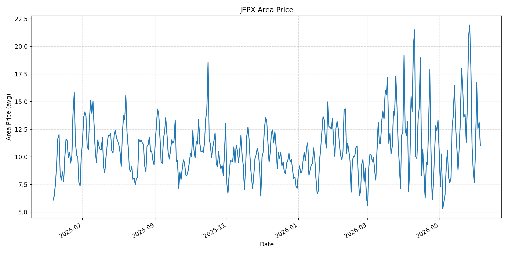
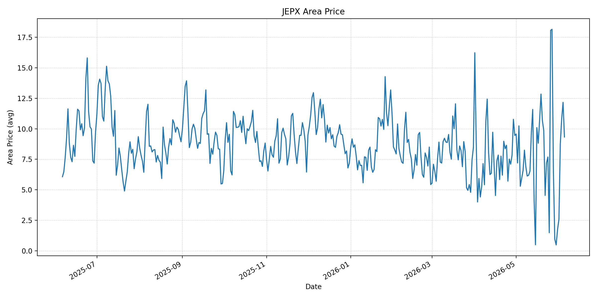
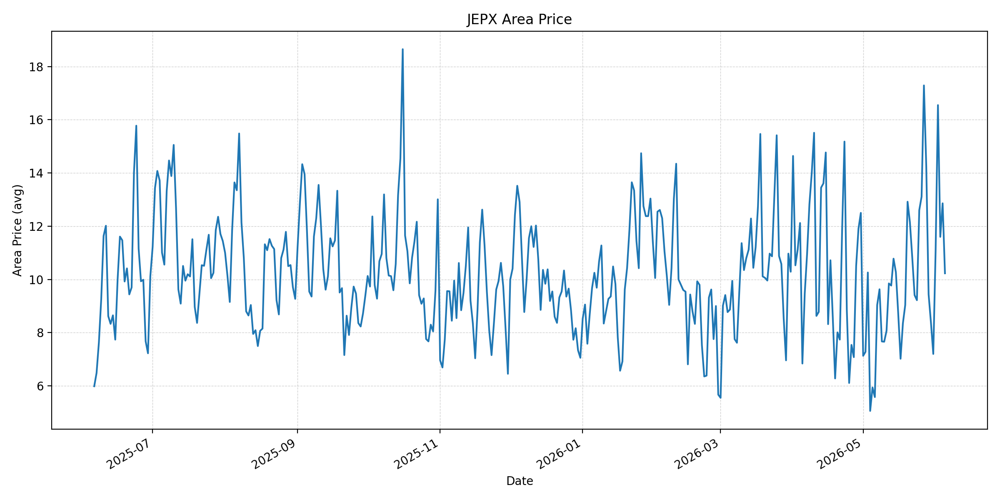
短期トレンド
JKMとJEPXシステムプライスの推移グラフ
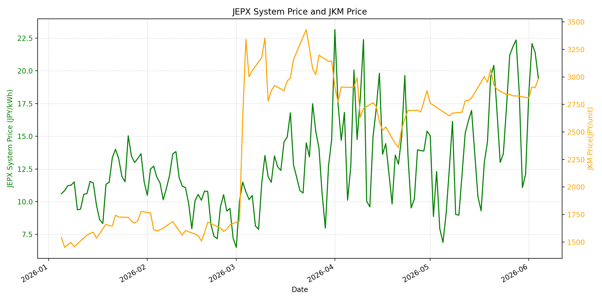
WTIの推移グラフ
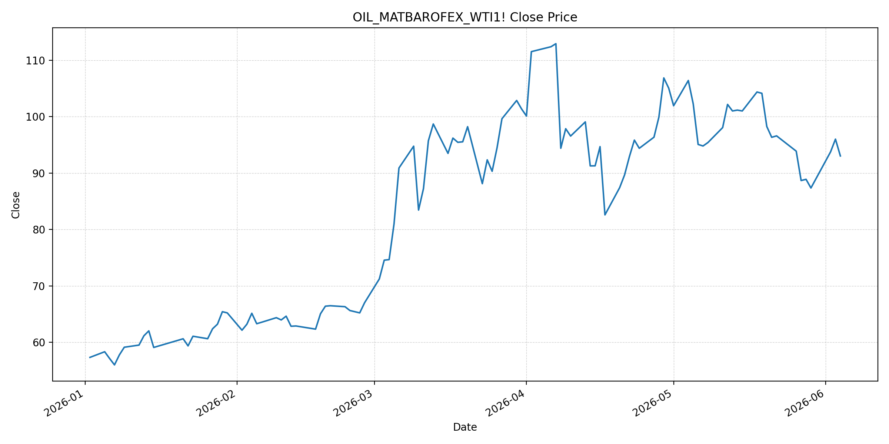
JEPXシステムプライス
JEPXは受渡日ベースの最新非空値で評価しています。最新値は 2026-06-05 分です。先週終値は 2026-05-29 時点の直近値、先月終値は 2026-05-31 時点の直近値で評価しています。
| エリア | 当日価格 | 前日価格 | 前日比（％） | 先週終値 | 先週比（％） | 先月終値 | 先月比（％） | 過去最高値 | 最高値比（％） |
|---|---|---|---|---|---|---|---|---|---|
| システム | 16.43 | 19.45 | -15.53 | 18.32 | -10.32 | 12.10 | 35.79 | 64.06 | -74.35 |
| 北海道 | 17.49 | 19.42 | -9.94 | 10.54 | 65.94 | 11.38 | 53.69 | 73.92 | -76.34 |
| 東北 | 18.27 | 20.26 | -9.82 | 13.37 | 36.65 | 14.64 | 24.80 | 84.92 | -78.48 |
| 東京 | 20.19 | 21.22 | -4.85 | 23.03 | -12.33 | 21.65 | -6.74 | 86.13 | -76.56 |
| 中部 | 20.29 | 21.33 | -4.88 | 19.37 | 4.75 | 15.25 | 33.05 | 52.06 | -61.03 |
| 北陸 | 17.35 | 19.02 | -8.78 | 19.01 | -8.73 | 10.56 | 64.30 | 46.48 | -62.68 |
| 関西 | 17.35 | 19.02 | -8.78 | 19.01 | -8.73 | 10.56 | 64.30 | 46.48 | -62.68 |
| 中国 | 11.02 | 13.14 | -16.13 | 10.84 | 1.66 | 7.66 | 43.86 | 46.48 | -76.29 |
| 四国 | 9.33 | 12.17 | -23.34 | 0.95 | 882.11 | 1.74 | 436.21 | 46.48 | -79.93 |
| 九州 | 10.23 | 12.86 | -20.45 | 9.44 | 8.37 | 7.20 | 42.08 | 40.54 | -74.77 |
LNG先物価格
最新値は 2026-06-04 の LNG(close) です。先週終値は 2026-05-28 時点の直近値、先月終値は 2026-05-29 時点の直近値で評価しています。
| 当日価格 | 前日価格 | 前日比（％） | 先週終値 | 先週比（％） | 先月終値 | 先月比（％） | 過去最高値 | 最高値比（％） |
|---|---|---|---|---|---|---|---|---|
| 2980.00 | 2902.00 | 2.69 | 2827.00 | 5.41 | 2826.00 | 5.45 | 10319.00 | -71.12 |
石油先物価格
最新値は 2026-06-04 の OIL(close) です。先週終値は 2026-05-28 時点の直近値、先月終値は 2026-05-29 時点の直近値で評価しています。
| 当日価格 | 前日価格 | 前日比（％） | 先週終値 | 先週比（％） | 先月終値 | 先月比（％） | 過去最高値 | 最高値比（％） |
|---|---|---|---|---|---|---|---|---|
| 93.04 | 96.02 | -3.10 | 88.90 | 4.66 | 87.36 | 6.50 | 123.70 | -24.79 |
ニュース
イラン情勢に関するニュース
- 2026年6月4日、APは、ヒズボラが米国仲介のレバノン停戦案を拒否し、イスラエル軍の攻撃で少なくとも4人が死亡したと報じました。記事は、レバノンでの戦闘継続がイラン戦争終結とホルムズ再開の努力を脅かしていると整理しています。 参照: AP, 2026-06-04
- 2026年6月4日、Reutersは、米下院がトランプ大統領による対イラン軍事行動継続を阻止する戦争権限決議を可決したと報じました。上院通過や拒否権覆しは不透明ですが、米国内の政治制約は停戦交渉の変数になっています。 参照: Reuters/Investing.com, 2026-06-04
ホルムズ海峡経由の石油・LNGに関するニュース
- 2026年6月4日、Reutersは、米国の封鎖でイラン原油輸出が大きく減る一方、中国需要の弱さからイラン産原油がディスカウントに転じたと報じました。供給制約だけでなく、需要減速も原油価格を押し下げる要因になっています。 参照: Reuters/MarketScreener, 2026-06-04
- S&P Global Energyは、ホルムズ海峡は開戦前に世界石油供給の約20%、LNGの約20%が通過していた一方、5月末時点の通航量は開戦前比で90%以上少ないと整理しています。商業的な「再開」には、物理的安全、保険料、船舶国籍リスクの正常化が必要です。 参照: S&P Global Energy, 2026年6月上旬
ホルムズ海峡経由でない石油・LNGに関するニュース
- 過去24時間で、日本向けの非ホルムズ新規大型調達に関する強い追加報道は確認できませんでした。直近のJOGMEC週次では、北東アジアJKMは米イラン和平期待で一時下落した後、攻撃応酬と夏季需要向け調達で18ドル前半から半ばに戻したと整理されています。 参照: JOGMEC, 2026-06-01
- JOGMECは、5月24日時点の発電用LNG在庫が195万トンと前週比9万トン減ったことも示しています。非ホルムズ供給があっても、夏季需要期に在庫が減る局面では、調達余力を慎重に見積もる必要があります。 参照: JOGMEC, 2026-06-01
日本国内のイラン戦争に関係するニュース
- 過去24時間で、JEPX制度や国内電力市場制度を直接変更する新規の強い発表は確認できませんでした。直近の国内対策として、経済産業省は2026年5月20日に、今夏は全エリアで最低限必要な予備率3%を確保できるため節電要請は実施しないと発表しています。 参照: 経済産業省, 2026-05-20
- 同発表では、国際情勢の変化、異常気象、発電所の休廃止、火力発電所の地域集中などにより、電力需給は予断を許さないとも説明されています。国内需給対策は供給力確保に向けた対応であり、燃料価格の上昇リスクを直接消すものではありません。 参照: 経済産業省, 2026-05-20
インサイト
ニュース事項による日本の電力市場への影響（短期：数日〜1週間）
- JEPXシステムプライスは 16.43 円/kWhで前日比 -15.53% と大きく低下しました。ただし先月比は 35.79% で、東京 20.19、中部 20.29 は20円台を維持しており、燃料・需給リスクが完全に剥落した状態ではありません。
- OILは 93.04 と前日比 -3.10% ですが、先月比は 6.50% です。Reutersが示す中国需要の弱さは短期の原油下押し材料ですが、APが報じるレバノン停戦不安とS&P Globalが示すホルムズ通航の低水準は、燃料心理の下支えとして残ります。
- LNGは 2980.00 と前日比 2.69%、先週比 5.41% です。JEPXが下がる日でも、LNGが上昇しているため、数日から1週間では電力スポットの下落持続よりも、東日本・中部の20円台維持と燃料ヘッジ需要を優先して見る必要があります。
ニュース事項による日本の電力市場への影響（長期：1ヶ月〜半年）
- S&P Globalが示すように、ホルムズの「商業的再開」は単なる通航許可ではなく、保険料・航路・船舶国籍リスクの正常化を伴う必要があります。通航量が開戦前比で大幅に低い状態が続けば、LNGの先月比 5.45% 上昇は夏季以降の火力燃料費に残りやすくなります。
- 非ホルムズ供給は重要ですが、JOGMECが示す発電用LNG在庫の減少と夏季需要向けスポット調達は、日本の調達余力を圧迫します。過去最高値比ではLNG -71.12% と低位でも、足元の上昇率が積み上がると、1ヶ月から半年の卸価格見通しは上方リスクを残します。
- 経済産業省は今夏の節電要請を見送っていますが、国際情勢や異常気象をリスクとして明示しています。JEPXの前日比低下をもって長期的な価格安定と判断せず、東京・中部の20円台、LNG在庫、ホルムズの保険料正常化を継続監視する局面です。